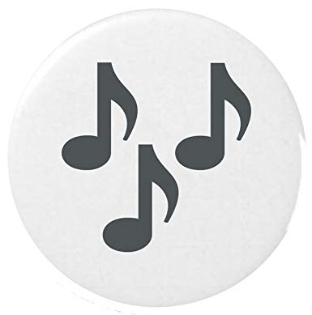

Ramzi est passionné de musique classique et de nouvelles technologies, il a un intérêt tout particulier pour le digital, le web, Puccini, Massenet, Domingo, Alagna, Netrebko et Gruberova (Grubi pour les intimes). Consultant en stratégie et marketing digital, mélomane, chanteur, élève de Pierre VANHOENACKERE au Conservatoire de Tourcoing, il est aussi le créateur des Meet-ups Musique et Numérique (#MusikNum) qu’il anime au CentQuatre depuis septembre 2016. Il est également l’auteur d’un recueil de « Nouvelles Russes », courtes histoires inspirées de son expérience professionnelle en Russie et où la musique occupe une place fondamentale. En avril 2017, Ramzi a créé la société Lanoramax qui conseille les start-ups (notamment Sonic Solveig) et les institutions du monde le culture en stratégie et numérique
vous pouvez découvrir mon blog en appuyant sur ce bouton
